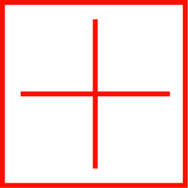
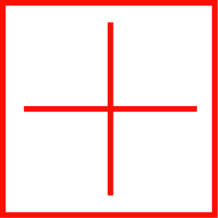
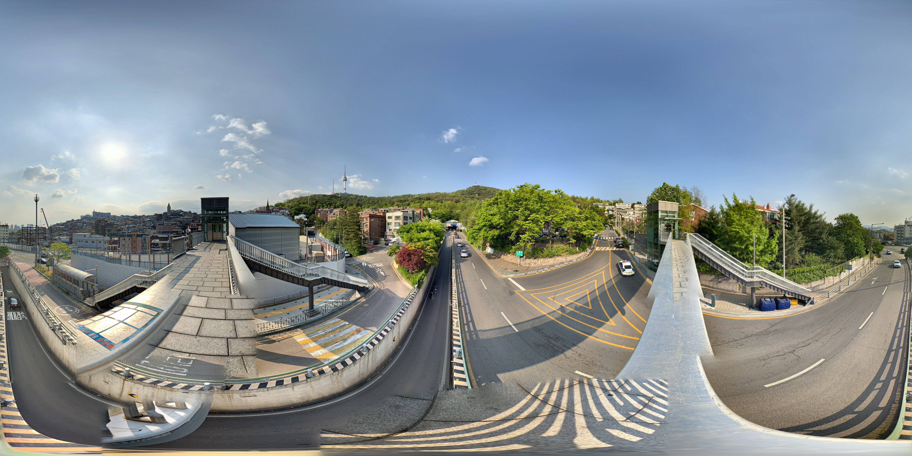
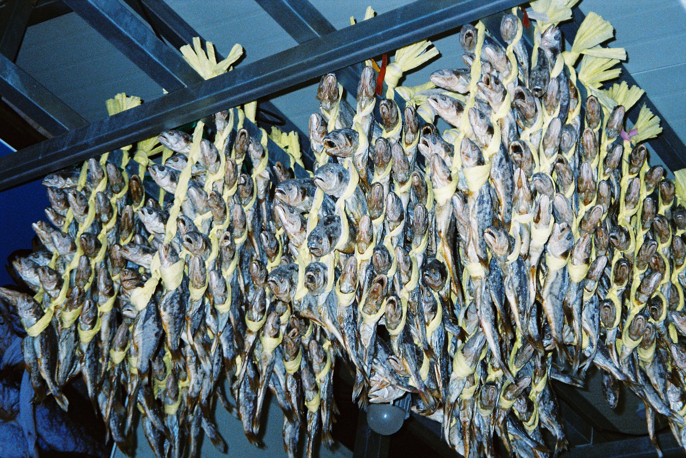

from dust to earth 01 - 01

micro-macro
cosmos
from small elements to big elements'
 



micro-macro
cosmos
a sapce entirely full of matter
shadow
bark
bark of tree
concrete
moss
void pet
balcket
lighter
ashtray
a road sign
papaer
painting on the wall
kiwa
cat
pot
chair
a space entirely full of matter
from dust to earth
a silver of wood to wood
a space where view gather
only one point in a continuous line
stare the space
micro - macr0
from small elements to big elements
